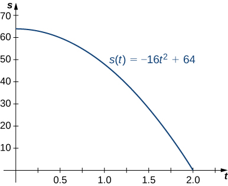
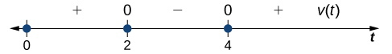
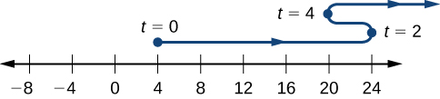

Definition 3.4.1.
The instantaneous rate of change of \(f\) with respect to \(x\) at \(x_0\) is the derivative
\begin{equation*}
f'(x_0)=\lim_{h\to 0}\frac{f(x_0+h)-f(x_0)}{h},
\end{equation*}
provided the limit exists.


